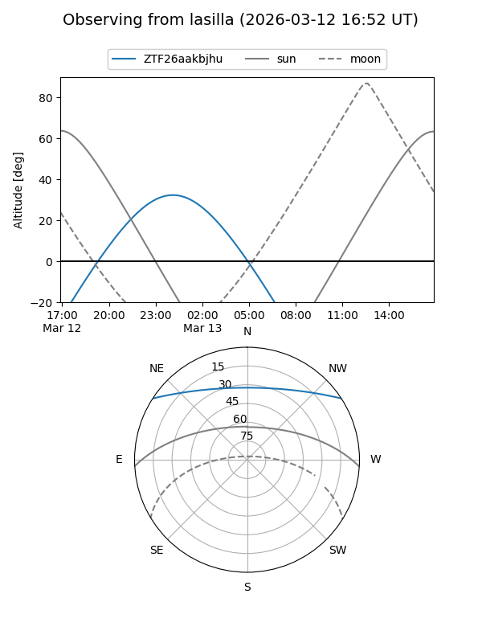
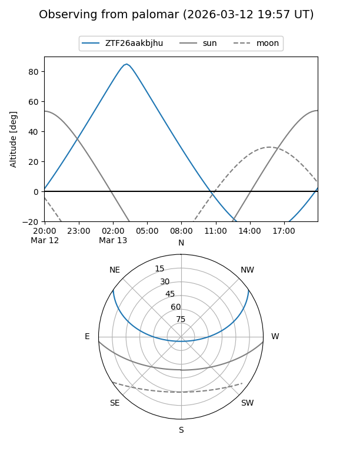

ZTF26aakbjhu
Target ZTF26aakbjhu at 2026-03-13 06:05
Aliases and brokers:
FINK: link
Lasair: link
ALeRCE: link
alt names
ZTF26aakbjhu (ztf,fink_ztf)
Coordinates:
equatorial (ra, dec) = 101.1535,+28.39184
equatorial (HMS+DMS) = 06:44:36.85,+28:23:30.62
galactic (l, b) = (186.6037,+11.15781)
Flags:
Photometry:
last ztfg=19.17
1 ztfg detections
Lightcurve
Visibility


Additional plots